angular-chart
Real time collaborative Visual Analytics with AngularJS and D3.js
Surveyor
Prof. Dr. Michael Granitzer
Adviser
Dr. Robert Basmadjian
Ich möchte euch heute meine Bachelorarbeit vorstellen. Ich habe sie bei Prof. Granitzer in Kooperation mit dem Passauer Startup ONE LOGIC geschrieben. Bei ONE LOGIC hat mich Robert Basmadjian betreut.
Wie der Titel schon sagt, befasse ich mich damit wie man collaborativ Daten visualisieren kann um daraus nachhalti Wissen zu generien.
Ich werde euch erst erklären warum das überhaupt wichtig ist. Dann die potentiellen Tools zeigen mit denen man die Problematik angehen kann, bevor ich euch meine Lösung zeige. Die Usability meines Tools habe ich in einer Studie untersucht und natürlich gibt es noch eine ganze Menge Möglichkeiten auf meiner Arbeit aufzubauen.
Real time collaborative Visual Analytics with AngularJS and D3.js
SurveyorProf. Dr. Michael Granitzer Adviser
Dr. Robert Basmadjian
Ich möchte euch heute meine Bachelorarbeit vorstellen. Ich habe sie bei Prof. Granitzer in Kooperation mit dem Passauer Startup ONE LOGIC geschrieben. Bei ONE LOGIC hat mich Robert Basmadjian betreut.
Wie der Titel schon sagt, befasse ich mich damit wie man collaborativ Daten visualisieren kann um daraus nachhalti Wissen zu generien.
Ich werde euch erst erklären warum das überhaupt wichtig ist. Dann die potentiellen Tools zeigen mit denen man die Problematik angehen kann, bevor ich euch meine Lösung zeige. Die Usability meines Tools habe ich in einer Studie untersucht und natürlich gibt es noch eine ganze Menge Möglichkeiten auf meiner Arbeit aufzubauen.
Wie der Titel schon sagt, befasse ich mich damit wie man collaborativ Daten visualisieren kann um daraus nachhalti Wissen zu generien.
Ich werde euch erst erklären warum das überhaupt wichtig ist. Dann die potentiellen Tools zeigen mit denen man die Problematik angehen kann, bevor ich euch meine Lösung zeige. Die Usability meines Tools habe ich in einer Studie untersucht und natürlich gibt es noch eine ganze Menge Möglichkeiten auf meiner Arbeit aufzubauen.
Motivation
Wie gesagt möchte ich euch erst zeigen was überhaupt das Problem ist.
1/31
Motivation
The Problem
Source: http://quipro.mx/sites/default/files/bigdata.png
Die ganze Welt redet über Big Data, Unternehmen sammeln Daten wie wild und Regirungen stellen öffentlich Daten ins Netz. Vor zwei Wochen haben wir vorgestellt bekommen wie schwierig es ist diese Daten zusammen zu bringen und daraus Erkenntnis zu bekommen.
2/31
Motivation
The Problem
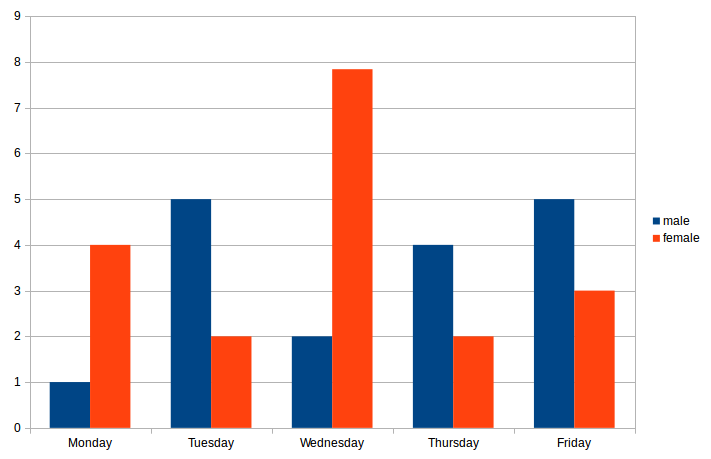 Source: self-made
Das Ergebnis dieser ganzen Arbeit sind allerdings meist statische Diagramme, in denen viel Information verloren geht. Zum Beispiel kann man nicht mehr sehen welchen Wert genau der rote Balken Mittwochs hat. Es gibt keinen Zugang zu den der Visualisierung zugrunde liegenden Daten, sodass niemand sie in verhältnis mit anderen Daten setzen kann oder anders darstellen kann.
3/31
Motivation
Use Cases - Blogs
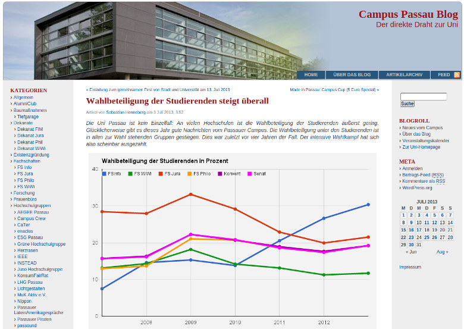 Source: http://uniblog.rzblogs.uni-passau.de/2013/07/03/wahlbeteiligung-der-studierenden-steigt-uberall/
In Blogs werden Daten veröffentlicht, wie hier die Wahlbeteiligung. Wer allerdings das Diagramm für dieses Jahr erstellen will muss erst wieder alle Werte in erfahrung bekommen.
4/31
Motivation
Use Cases - One Data
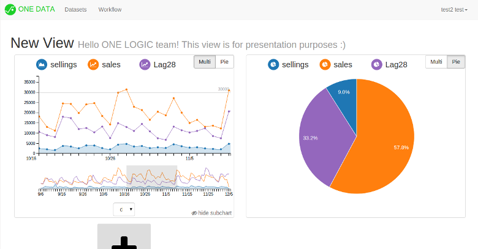 Source: self-made
Auch für Unternehmen, wie ONE LOGIC, ist es wichtig ihre Auswertungen mit Kunden zu teilen. Dabei kann es sich um livedaten handeln die sich regemäßig ändern oder bestimmte Punkte müssen hervorgehoben werden um sie besser zu kommuniziren.
5/31
Motivation
Use Cases - 42-Data
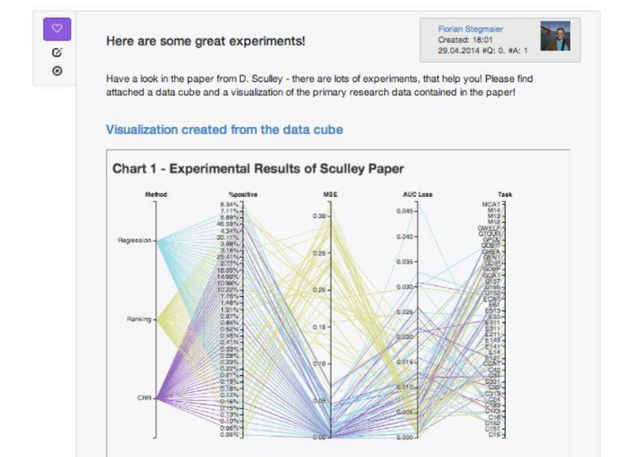 Source: http://42-data.org
Im 42-data Projekt geht es darum das Wissenschaftler Fragen mit Datenquellen und einer entsprechenden Visualisierung beantworten. Gerade hier wäre es sinnvoll anderen die Möglichkeit zu geben aus den Daten andere Diagramme zu erstellen um die Fragen noch passender zu beantworten.
6/31
Motivation
Use Cases - Visual Analytics
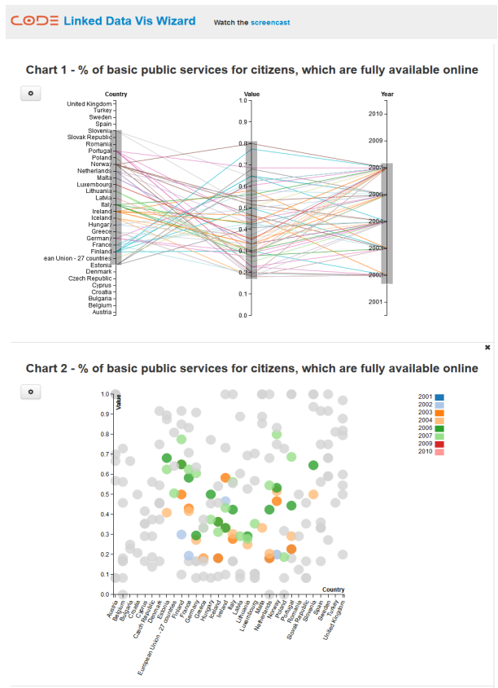 Source: http://code.know-center.tugraz.at/vis
Im Titel meiner Arbeit kommt außerdem Visual Analytics vor, dabei geht es darum Erkenntnis aus daten zu ziehen indem man sie von verschiedenen Blickwinkeln betrachtet. In diesem Beispiel werden durch eine Selektion im ersten Diagramm die korrespondierenden Punkte im zweiten Diagramm hervorgehoben.
7/31
Motivation
Requirements
Supported Chart Types
- Combination Charts
- Expandable with own visualizations
Data Source
- Possibility to specify the data
- JSON data for configuration
Scalability
- Multiple views can be shown simultaneously
Um ein Tool zu finden, dass in all diesen Scenarien eingesetzt werden kann habe die Anforderungen dafür gesammelt und werde die wichtigsten jetzt kurz vorstellen.
Besonders wichtig finde ich kombinationen von mehreren Diagrammen, zum Beispiel ein Punktdiagramm mit einer Trendline. Es ist unmöglich im vorhinein alle je benötigten Diagrammtypen einzubauen, deshalb muss das System erweiterbar sein.
Das Format der zu grunde liegenden Daten ist nicht entscheidend, da man sie meist in ein benötigtes Format konvertieren kann. Allerdings sollten die Daten spezifizierbar sein, sodass Währungen oder ein Datum richtig dargestellt werden können.
Es sollte natürlich nicht ausgeschlossen sein mehrer Diagramme gleichzeitig anzuzeigen.
Besonders wichtig finde ich kombinationen von mehreren Diagrammen, zum Beispiel ein Punktdiagramm mit einer Trendline. Es ist unmöglich im vorhinein alle je benötigten Diagrammtypen einzubauen, deshalb muss das System erweiterbar sein.
Das Format der zu grunde liegenden Daten ist nicht entscheidend, da man sie meist in ein benötigtes Format konvertieren kann. Allerdings sollten die Daten spezifizierbar sein, sodass Währungen oder ein Datum richtig dargestellt werden können.
Es sollte natürlich nicht ausgeschlossen sein mehrer Diagramme gleichzeitig anzuzeigen.
8/31
Motivation
Requirements
Reusability and Integration
- The configuration and state of a chart can be saved
- Chart interactions provide hooks for reuse
- Support of different screen sizes
Interaction
- In-place editing of axes and chart type
- Selections and annotations
State of the art
9/31
State of the art
Commercial Libraries
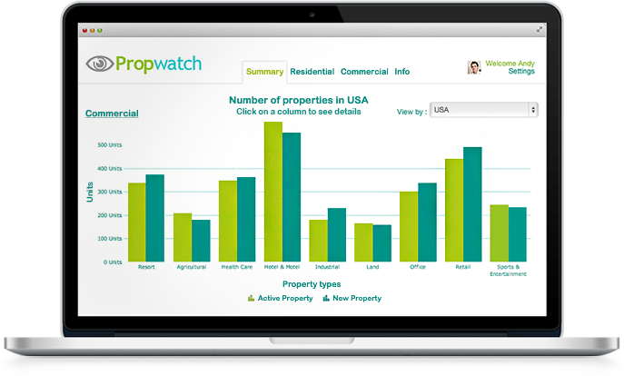 Source: http://www.fusioncharts.com/
Adress businesses with dashboard solutions, maps...
10/31
State of the art
Free Libraries
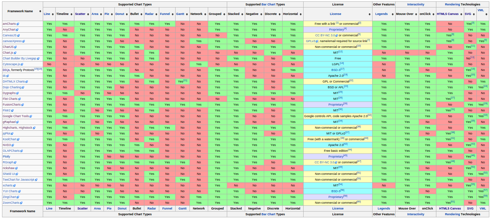 Source: https://en.wikipedia.org/wiki/Comparison_of_JavaScript_charting_frameworks
11/31
State of the art
Free Libraries
Google Charts
- Known form Google analytics
Chart.js
- Simple API, lots of users
Flot
- jQuery library, HTML5 canvas
D3.js
- All kinds of visualizations
- Google Chart - Google Analytics
- Chart.js very easy to use, lots of users
- Flot - jQuery, HTML5 canvas
- D3.js - All kinds of visualizations
12/31
State of the art
Comparison
Legend
important supported unsupported
important supported unsupported
Highcharts
paid > 90 charts custom charts SVG no selections / annotationsFusionCharts
paid no custom charts SVG no selections annotationsGoogle Charts
no custom charts data schema SVG selections annotationsChart.js
custom charts no events HTML5 no selections no annotationsFlot
custom charts no SVG selections no annotationsD3.js
custom charts data schema SVG selections annotations
Die wichtigsten positiven/negativen, komplette tabelle zu groß.
Zeilenweise durchgehen
Zeilenweise durchgehen
Approach
13/31
Approach
Methodology - D3.js
D3.js (Data-Driven Documents) is a JavaScript library for manipulating documents based on data. It can be used for any kinds of visualization and DOM manipulation. It can be a lot more than required in my work
15/31
user:
Approach
Methodology - AngularJS
Hello{{user.firstname ? ' ' : ''}}{{user.firstname}}{{user.lastname ? ' ' : ''}}{{user.lastname}}!
user:
{{user}}
AngularJS lives in the DOM and does not manipulate it from outside, like jQuery. Diget circle checks for changes.
Two way databinding
16/31
Approach
Technical Solution
Angular Directive:
<angularChart options="options" dataset="dataset" schema="schema"></angularChart>
Two-Way Data binding:
AngularJS <> angular-chart <> C3.js
create own tag, to have dom manipulation only in there, watch variables to redraw
17/31
Approach
Technical Solution
JSON config
{
'rows': [{
'key': 'sales',
'type': 'area-spline',
'axis': 'y',
}, {
'key': 'trend',
'show': false
}],
'xAxis': {
'key': 'date'
},
'annotation': [{
'axis': 'x',
'value': '10.10.2013',
'label': 'start'
}],
'type': 'line',
'zoom': {
range: [2, 4]
}
}
18/31
Approach
angular-chart: chart type
{{optionsChartType.type}}
my chart
19/31
options.xAxis.rows[3].show:
options.xAxis.rows[3].axis:
Approach
angular-chart: legend
{{optionsRows.rows[0].type}}options.xAxis.rows[3].show:
{{optionsRows.rows[4].show}}options.xAxis.rows[3].axis:
{{optionsRows.rows[4].axis}}
my chart
20/31
Approach
angular-chart: xAxis
{{optionsXAxis.xAxis.key}}
my chart
21/31
Approach
angular-chart: zoom
{{optionsZoom.zoom}}
my chart
22/31
Approach
angular-chart: annotations
{{optionsAnnotations.annotation[0]}}
opt.annotation[1]: {{optionsAnnotations.annotation[1]}}
my chart
Evaluation
eval
23/31
User Evaluation
Thinking Aloud - Users
Students, UI Developers, Data Scientists 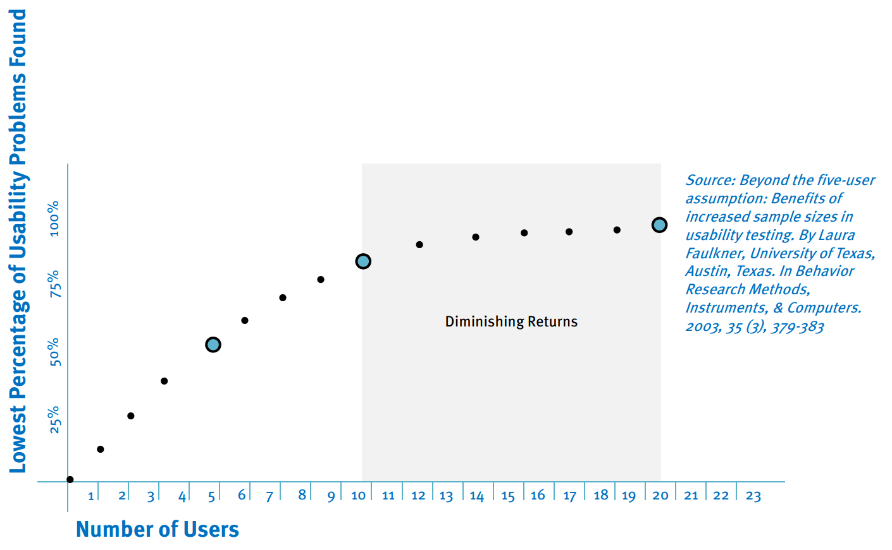 Source: http://www.ac4d.com/classes/201_open/03.AC4D_IDSE201_ThinkAloudProtocol.pdf
Evaluating the usability by encouraging a user to think out loud.
24/31
User Evaluation
Thinking Aloud - Setup
- User solves tasks
- User thinks out loud
- Screen / user video
- Declaration of consent
- Sample task
Evaluating the usability by encouraging a user to think out loud.
25/31
User Evaluation
Thinking Aloud - Test
Show problems: Icons, tooltips, subchart
26/31
User Evaluation
Thinking Aloud - Results
Usability problems identified:
- Icons are not clear
- Tooltips missing
- Subchart should be named Navigator
Feature wish list:
- Change colors
- Define axis scaling
- Generate trend lines
User understood were actions can be performed.
Future Work
27/31
Future Work
Improve Usability
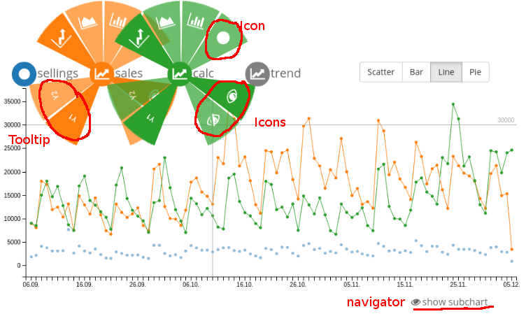 Source: self-made
Box plots, stacked bar charts
28/31
Future Work
More chart types
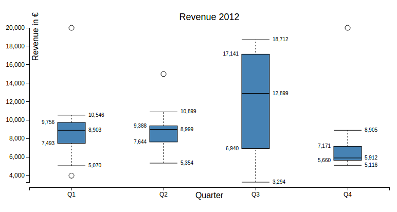 Source: http://bl.ocks.org/jensgrubert/7789216
Box plots, stacked bar charts
29/31
 Source: http://www.fusioncharts.com/explore/export-charts-as-images-and-PDF/
Source: http://www.fusioncharts.com/explore/export-charts-as-images-and-PDF/
Future Work
Chart Export
Source: http://www.fusioncharts.com/explore/export-charts-as-images-and-PDF/
Image for (facebook) preview
SVG to integrate without interactivity
SVG to integrate without interactivity
30/31
Future Work
Server Integration
Source: self-made
Image for (facebook) preview
SVG to integrate without interactivity
SVG to integrate without interactivity
31/31
angular-chart
Open Source Project
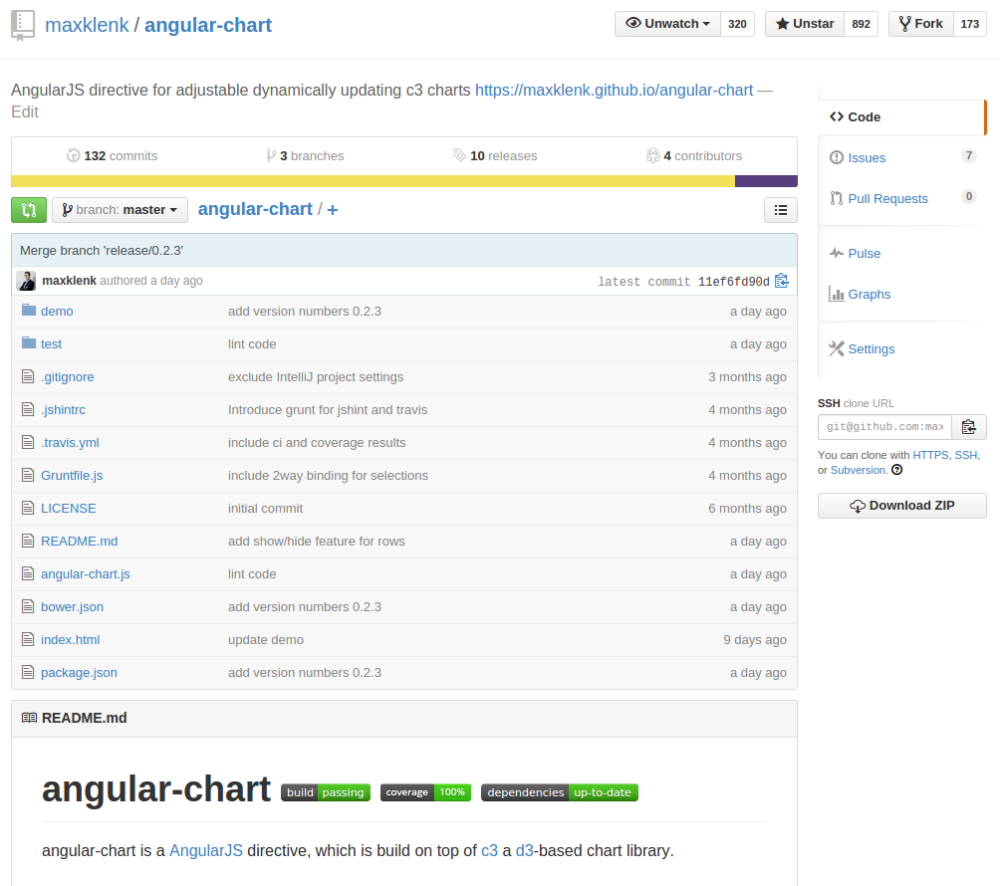 Source: https://github.com/maxklenk/angular-chart/
Open Source, integration in package manger, CI, 100% coverage, Demo Seite